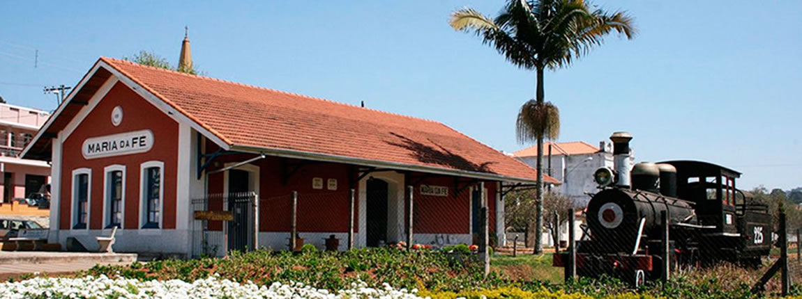

Conheça Maria da Fé
Maria da Fé é um município brasileiro do Estado de Minas Gerais. Sua população estimada em julho de 2014 era de 14 534 habitantes. A sede do município está a 1 258 metros de altitude. Maria da Fé é um dos municípios mais frios do estado de Minas Gerais. No inverno as temperaturas mínimas podem ficar abaixo de 0 °C.
O município está localizado em plena Serra da Mantiqueira bem próximo à estância paulista de Campos do Jordão e às mineiras do chamado Circuito das Águas. O turismo é ainda incipiente, mas existem possibilidades de turismo rural, com passeios a cavalo e comida de fogão a lenha.
Seus principais bairros e distritos são: Pinto Negreiros, Mata do Izidoro, Posses, Ilha e São João. Na cidade, a Igreja Matriz de Nossa Senhora de Lourdes possui murais de Pietro Gentilli, pintor italiano que também possui obras em Americana (Estado de São Paulo) e Mariana (Minas Gerais). A cidade também possui um Centro Cultural, onde estão disponíveis informações históricas e turísticas sobre o município e também a Casa do Artesão, um espaço criado para a exposição de trabalhos de artesanato da cidade.
Na praça Getúlio Vargas estão algumas das mais antigas oliveiras da cidade, conhecida nacionalmente como "Cidade das Oliveiras", já que a fazenda experimental de Maria da Fé da Empresa de Pesquisa Agropecuária de Minas Gerais (EPAMIG) é a única produtora de mudas de oliveira do Brasil, e que deu origem a duas variedades de oliveiras genuinamente brasileiras, resultadas de cruzamentos e anos de pesquisas da instituição: a JB e a Maria da Fé.